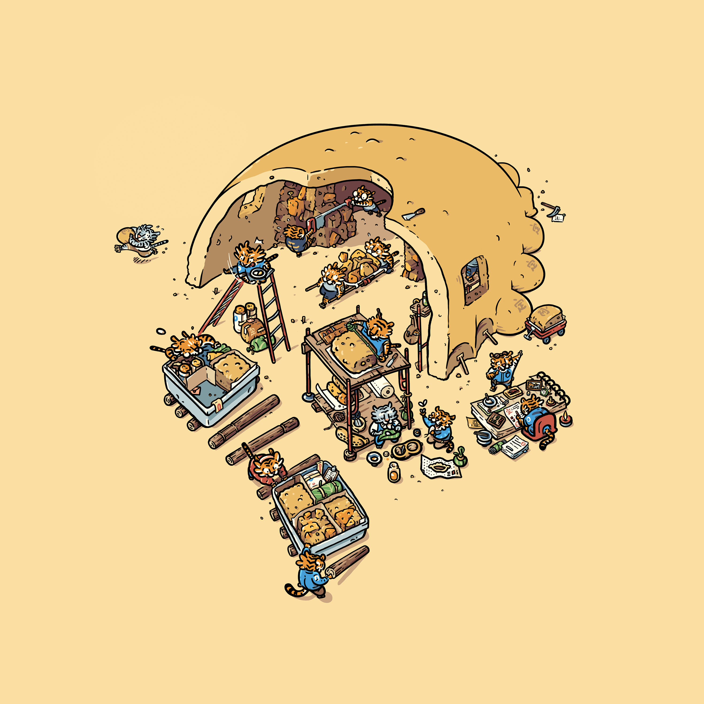

Animation

Illustrations

Motion Graphics
Game Development

Illustration

Programming
Drawing
Oral reading
Skills education as the focus, with emotional growth as a major accompaniment.
“We got out of our harnesses and began to float around. The other folks went straight
into somersaults and enjoying all the effects of weightlessness. I wanted no part in
that. I wanted, needed to get to the window as quickly as possible to see what was out
there.
I looked down and I could see the hole that our spaceship had punched in the thin,
blue-tinged layer of oxygen around Earth. It was as if there was a wake trailing behind
where we had just been, and just as soon as I’d noticed it, it disappeared.
I continued my self-guided tour and turned my head to face the other direction, to stare
into space. I love the mystery of the universe. I love all the questions that have come
to us over thousands of years of exploration and hypotheses… all of that has thrilled me
for years… but when I looked in the opposite direction, into space, there was no
mystery, no majestic awe to behold… all I saw was death.
I saw a cold, dark, black emptiness. It was unlike any blackness you can see or feel on
Earth. It was deep, enveloping, all-encompassing. I turned back toward the light of
home. I could see the curvature of Earth, the beige of the desert, the white of the
clouds and the blue of the sky. It was life. Nurturing, sustaining, life. Mother Earth.
Gaia. And I was leaving her.
Everything I had thought was wrong. Everything I had expected to see was wrong.
I had thought that going into space would be the ultimate catharsis of that connection I
had been looking for between all living things—that being up there would be the next
beautiful step to understanding the harmony of the universe. In the film “Contact,” when
Jodie Foster’s character goes to space and looks out into the heavens, she lets out an
astonished whisper, “They should’ve sent a poet.” I had a different experience, because
I discovered that the beauty isn’t out there, it’s down here, with all of us. Leaving
that behind made my connection to our tiny planet even more profound.
It was among the strongest feelings of grief I have ever encountered. The contrast
between the vicious coldness of space and the warm nurturing of Earth below filled me
with overwhelming sadness. ... My trip to space was supposed to be a celebration;
instead, it felt like a funeral.”
- William Shatner
For things it has seen before, 'cells' in its brain would fire in ways that feel
familiar.
If it were to see something for the first time, however, parts in the brain responsible
for 'meaning' would act in ways it is not accustomed to, possibly leading to new
sensations.
Now, if its brain were to somehow be unable to 'hold' the meaning of this vision, would
it adapt? Or would evolution through another mutation be necessary for the 'handling' of
said meaning?
The next time you find yourself procrastinating, do the following:
1. Think of the task you are avoiding.
Imagine the probable effects of that task, repeating until you see clearly see how the task brings about a result you desire.
This does, however, require that you have genuine desire for the final outcome.
Some things we avoid tend to be big and overly complex, and require breaking down into
manageable tasks.
This step should give you a tiny spark of motivation, but might not result in you acting.
2. Put away all sources of dopamine.
If you are a dopamine addict, this is when you experience withdrawal. Bear in mind that you will not feel good.
The key to this part lies in remembering that it is not supposed to feel good, as withdrawal rarely does.
3. Calling to mind the task, and the outcome that you desire, make progress with the task.
Go ahead and break the task into as many steps as you wish, but remember that you will feel like running away. Your body is wants to run away, and knows that dopamine is nearby. Let the noise happen as you proceed with the task, and when it is completed, consciously acknowledge the net good it brings.
Notice how your body is now calmer, and the craving for dopamine has lost its edge. This is why it is paramount that we genuinely wish for the outcome that lies on the other side of the task.
14:46:20, 5 MAY 2025
If you do not know what you want, and do not serve someone else's want, you cannot
participate in the economy of ideas.
To directly benefit from the economy of ideas, is to manifest ideas, either your own or
someone else's.
A single high-resolution data point is fine if one is able to perceive the gradations in
the data point, especially after heavy compression.
Similar to how a high-resolution image can be compressed an shrunk to a comparatively
small size, whilst retaining a discernable level of detail.
But take away that perception of gradation, eg. through
blurriness or colour-blindness, and you will be left with a single ambiguous data point.
However, say we separate this data point at points where these gradations intersect into
multiple data points.
The resulting fragments could hold meaning inferred through their shared relationship.
The possibility of deducing the information held in the original gradations is not
completely lost, even with the loss of the previously mentioned perception.
In that a sentient being can act in both consciousness and unconsciousness. The dance is not about us. We find that we want to dance, and find ourselves dancing. In a world where simpler forms of consciousness dance in entropy, heat, and stone,
Others dance in the orbit of stars, and planets. Some seemingly going in circles, while others struggle to stay in place.
The reference used to call for a specific point of data can be anything. It can be replaced with any alphanumeric value without affecting the data whatsoever. A person's given name, however, may not be replaced without altering the very personality it is used to call for. In this way, the giving of a name is a sort of prayer for the manifestation of a certain trait or character.